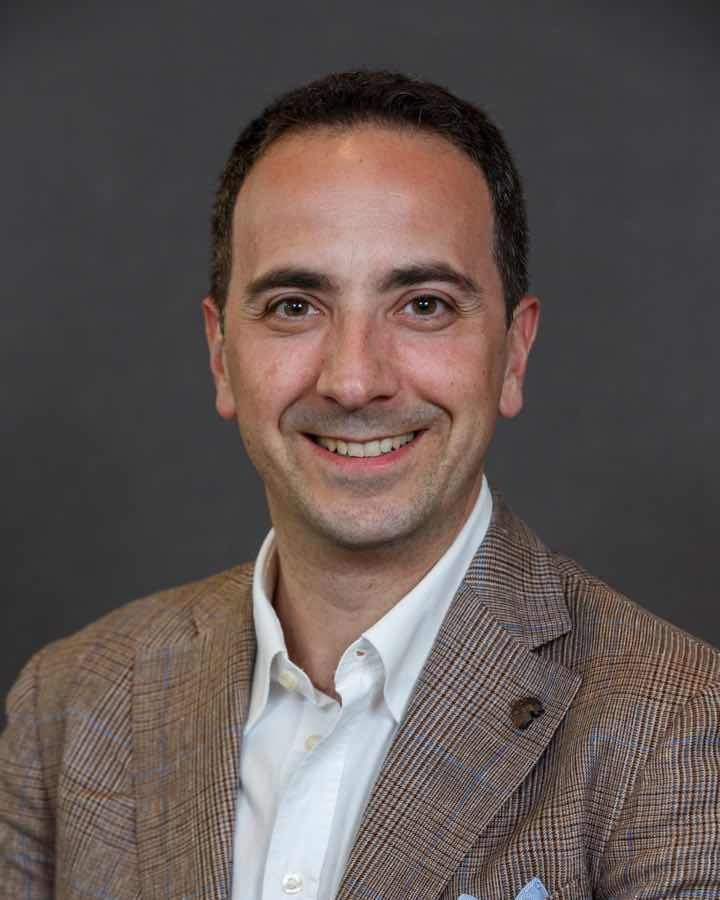

Meyer Children’s Hospital IRCCS · Florence
Luca BartoliniMD, FAAN, FAES
Pediatric neurologist and epileptologist caring for children with complex neurological disorders, with a special focus on drug-resistant and rare genetic epilepsies.
ABPN board-certified (USA) · Fellow of the American Academy of Neurology and of the American Epilepsy Society

For families
First visits, second opinions and follow-up for children and adolescents with neurological conditions. Visits are in Italian or English, at Meyer Children’s Hospital in Florence.
Clinician, professor and editor
Areas of expertise
Treatment of complex neurological disorders in children, with a special interest in all forms of childhood epilepsy.
- Childhood epilepsy
- Rare, drug-resistant neurogenetic conditions
- Inflammatory disorders of the central nervous system
- Pediatric stroke
- Neurocritical care
- Headache
Biography
Dr. Bartolini is a pediatric neurologist at Meyer Children’s Hospital IRCCS and Associate Professor of Child Neurology at the University of Florence. He is one of the few physicians in Europe to be board-certified in Child Neurology and Epilepsy in the United States by the American Board of Psychiatry and Neurology (ABPN) (opens in a new tab). He has also been named Fellow of the American Academy of Neurology (FAAN) and Fellow of the American Epilepsy Society (FAES), in recognition of his professional achievements and dedication to the care of neurological disorders.
Before returning to Italy, he spent 13 years in the United States in clinical practice, research, administration and management, culminating in his role as director of the Pediatric Epilepsy Program at Hasbro Children’s Hospital, Brown University. His area of expertise is the treatment of pediatric epilepsy, including drug-resistant epilepsy, and pediatric cerebrovascular diseases.
Read full biographyShow less
Before joining Meyer Children’s Hospital, Dr. Bartolini was the Director of the Pediatric Epilepsy Program at Hasbro Children’s Hospital (opens in a new tab) and Assistant Professor of Pediatrics, Neurology and Neurosurgery at the Warren Alpert Medical School of Brown University (opens in a new tab), an Ivy League (opens in a new tab) university in the United States. Under his leadership, the program became a referral center for the treatment of complex pediatric epilepsies in Rhode Island, Southern Massachusetts and Eastern Connecticut. He built a multidisciplinary team able to perform cutting-edge diagnostic tests and advanced treatments. The surgical program (opens in a new tab) offered multiple options to children with drug-resistant epilepsy, including invasive EEG monitoring with stereotactic EEG, resective surgery, MRI-guided stereotactic laser ablation and implantation of neuromodulation devices. Among many achievements, Dr. Bartolini’s team was the second in New England to implant a responsive neurostimulation (RNS) device in a child, who then became seizure-free without postoperative deficits.
Dr. Bartolini’s areas of research include neuroinflammatory mechanisms and the role of neurotropic viruses in pediatric epilepsy, pediatric stroke and cerebral vasculitis.
His research has been supported by Advance-CTR and the Children’s Miracle Network at Brown University, the American Epilepsy Society, the Epilepsy Foundation of America and the Division of Intramural Research of the National Institute of Neurological Disorders and Stroke (NINDS).
Dr. Bartolini serves as Editor-in-Chief of Neurology: Clinical Practice (opens in a new tab) (official journal of the American Academy of Neurology – 2025 IF = 4.2) and sits on the Leadership Development Subcommittee and the Publications Committee of the American Academy of Neurology (opens in a new tab).
From Padova to Children’s National, the NIH and Brown, and back to Florence
- 2023NowMeyer Children’s Hospital IRCCS · University of FlorenceAttending pediatric neurologist and epileptologist; Associate Professor of Child Neurology
- 2019 – 2023Hasbro Children’s Hospital · Brown UniversityDirector, Pediatric Epilepsy Program; Assistant Professor of Pediatrics, Neurology and Neurosurgery
- 2013 – 2019Children’s National Hospital · National Institutes of HealthResidency in pediatrics, child neurology training, and fellowships in neuroscience research, epilepsy and clinical neurophysiology
- 2000 – 2006University of Padova School of MedicineDoctor of Medicine